EVB LAN9252-PICtail Add On Board (SPI Mode)
EtherCAT Master and Slave Configuration :-
The following steps describe how to configure the EtherCAT master and slave.
1. Configure the master with the TwinCAT driver. Refer - Setting up TWINCAT master for window platform.
2. After downloading Ethercat from microchip GIT repo, SAMED51 EtherCAT slave.xml using the TwinCAT utility,
Note: Refer to "SSC Generated Files" and the slave information in the ESI files.
3. Copy the SAMD51 EtherCAT slave.xml file to the directory path: C:\TwinCAT\3.1\Config\Io\EtherCAT” for TwinCAT 3.1.
4. To program the default ESI file of the SAMD51 firmware, Refer to "SSC Generated Files".
Note: The pre-built binaries are available in the Binaries directory.
5. Launch TwinCAT and scan EtherCAT slaves from TwinCAT. Refer "Scanning EtherCAT Slaves" to scan the slaves.
6. Program EEPROM using SAMD51 EtherCAT Slave.xml. Refer "EEPROM Programming" before EEPROM programming. If the EEPROM is programmed successfully, the device state will enter ‘OP’ mode as shown below
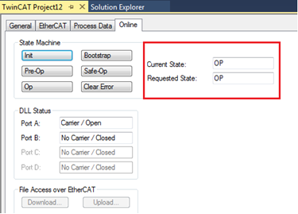
7. Once the EEPROM is programmed successfully, the state of the device will change to OP mode.
Note: If the device changes to OP mode, then the device is in an operational state. If the device is not in OP mode, then there is an issue with the setup.
- Setting up Master in Windows
To setup master in Windows, follow these steps:
1. Download and install TwinCAT 3.1 on Windows from the following location: http://beckhoff.com/.
2. TwinCAT Ethernet driver installation: If the TwinCAT tool is installed successfully, a TwinCAT icon will be shown in bottom-right corner of the desktop. After clicking the icon, a pop-up window will be displayed. Select TwinCAT XAE (VS XXXX) as shown in the below figure-
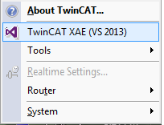
Note: VS XXXX refers to version of the Visual Studio installed on the computer.
3. On the TwinCAT Project1 window, from TWINCAT > Show Realtime Ethernet Compatible Devices.
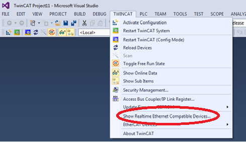
4. Select the Network adapter, and then install the TwinCAT driver.
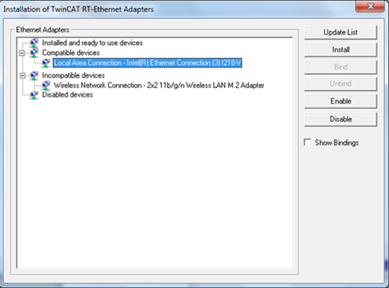
5. Once the TwinCAT driver is installed successfully, the driver is compatible with the TwinCAT master. Now the network adapter is moved under Installed and ready to use devices
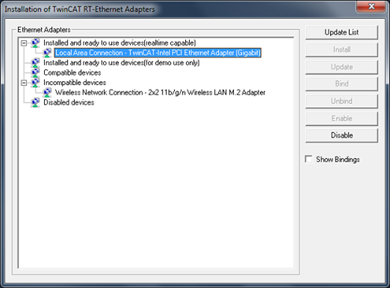
- Generate SSC files
To generate SSC files, do the following:
1. Start the SSC Tool(Version 5.12) from the start menu, as shown below
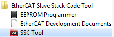
2. In the menu bar, click File and then New to continue
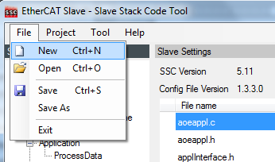
- The shared "Microchip-SAMD51-LAN925x-SSC_Config.xml" with Name="Microchip - EtherCAT Slave Controller" Version="0.0.1.2".
- The older version of the ""Microchip-SAMD51-LAN925x-SSC_Config.xml" file need to be removed.
ssc->tool->option->configuration
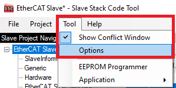
Remove the old "Microchip-SAMD51-LAN925x-SSC_Config.xml"
- 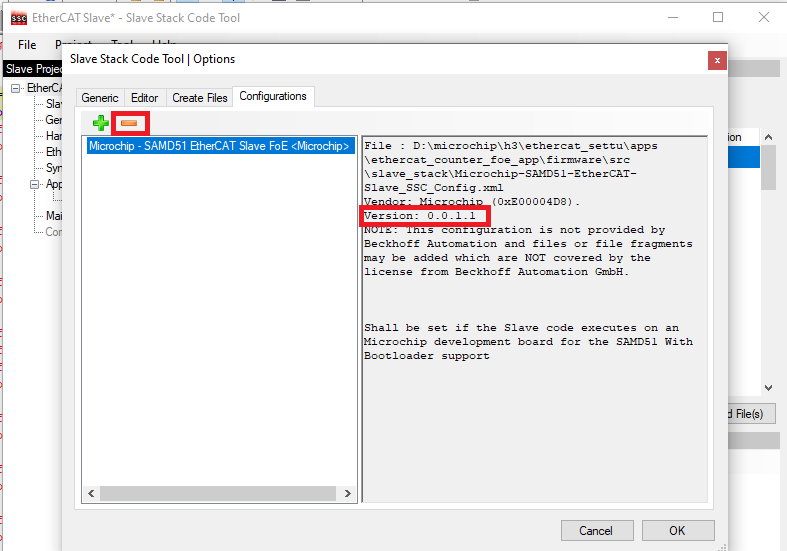
we can see the different version in the
NOTE :- These following files are part of the Demo application and these files will be used while generating SSC source code.
|
SSC required files |
File Path |
|
sample_app.xlsx ( The file with Counter and Tigger index details) |
<ethercatrepo>\ethercat\apps\ethercat_counter_foe_app\firmware\src\slave_stack |
|
Microchip-SAMD51-EtherCAT-Slave_SSC_Config.xml (the Slave code executes on an Microchip development board for the SAMD51 With Bootloader support ) |
<ethercatrepo>\ethercat\apps\ethercat_counter_foe_app\firmware\src\slave_stack |
|
SAMD51_EtherCAT_Slave.xml (This XML file is generated from SSC tool ) |
<ethercatrepo>\ethercat\apps\ethercat_counter_foe_app\firmware\src\slave_stack |
3. Click Import to import the SSC Tool configuration file "Microchip-SAMD51-LAN925x-SSC_Config.xml" from the EtherCAT Git root path.
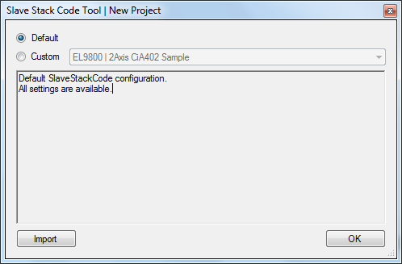
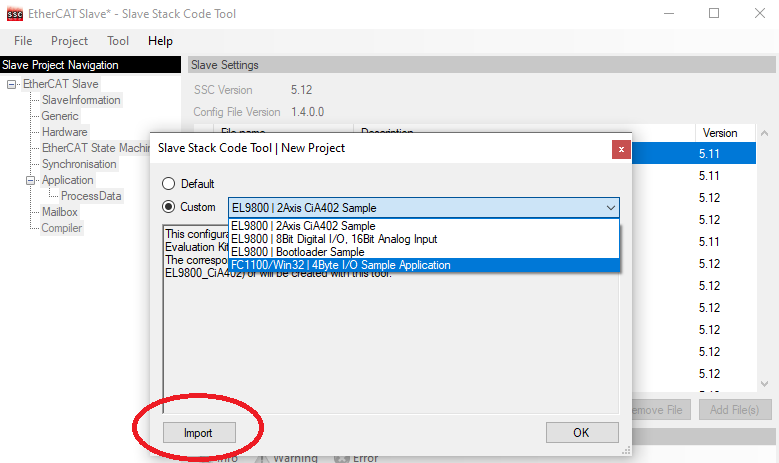
4. After selecting the file, click Open to import the SSC Tool configuration file.
5. Once imported, check the Custom drop-down box, select Microchip – EtherCAT Slave Controller and then click OK.
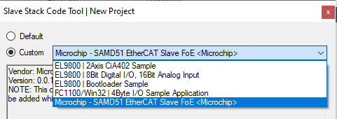
New input configuration file is selected with new version 0.0.1.2
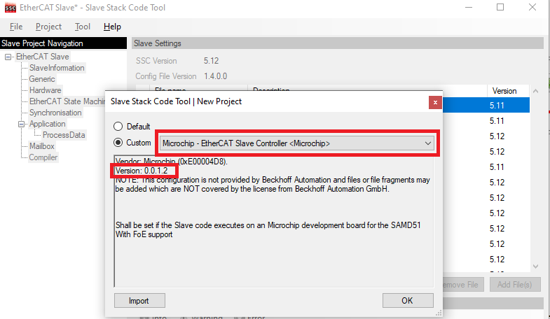
6. After selecting the configuration SSC will prompt for drv_lan9252.c file. Click “OK” and choose “drv_lan9252.c” file from EtherCAT driver folder path.
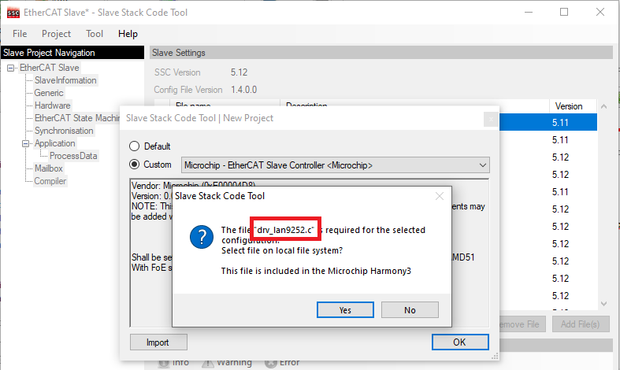
Select drv_lan9252.c file from the ethercat->driver->lan9252->src->drv_lan9252
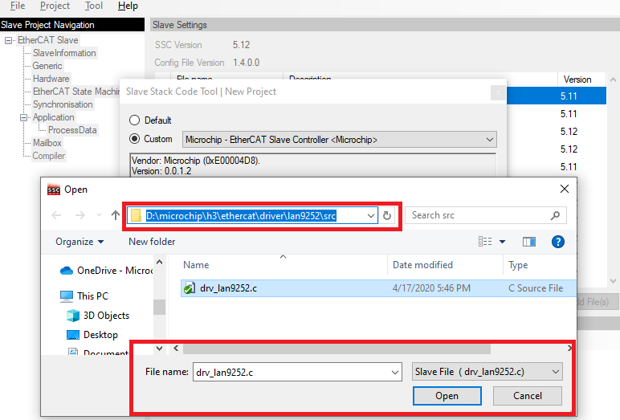
7. All listed parameters under Slave Information tab can be changed as shown below
Slave settings with the used version -
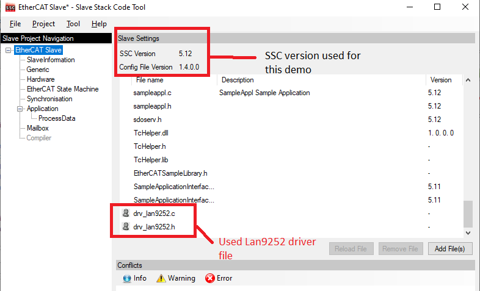
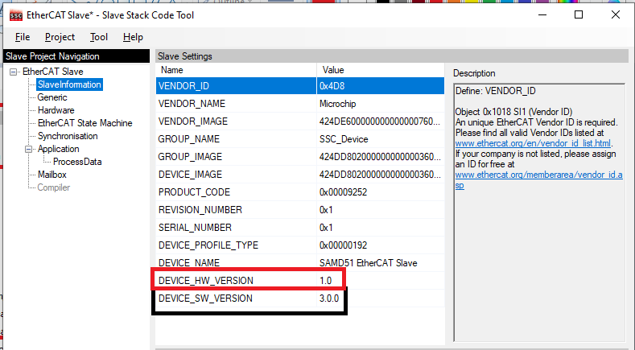
8. Click “Import” option under “Tool- >Application” menu bar.
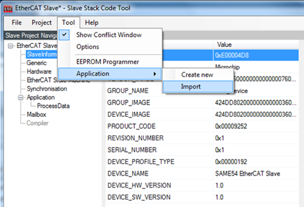
9. Select the file sample_app.xlsx which can be found in the EtherCAT root directory (<install-dir>\ethercat\app\<demo>\firmware\src\slave_stack). This file is an object file which contains the information about application objects.
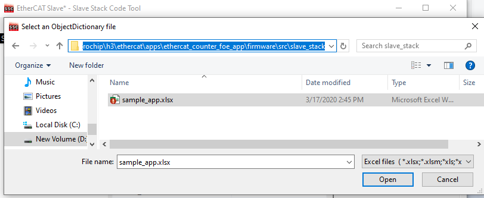
10. Once the file is selected, status message will be displayed as shown below. Then click OK to continue
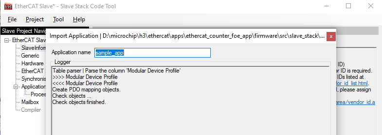
11. Click the Project drop-down menu in the tool bar and select Create New Slave Files. The pop-up windows
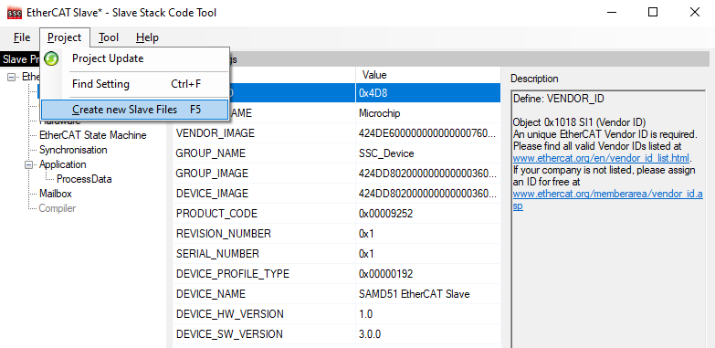
Below is the Default ESI path is selected to save the "SAMD51_EtherCAT_Slave.xml" and the default folder path is selected to generate Slave stack Source files. user can modify as per the requirement.
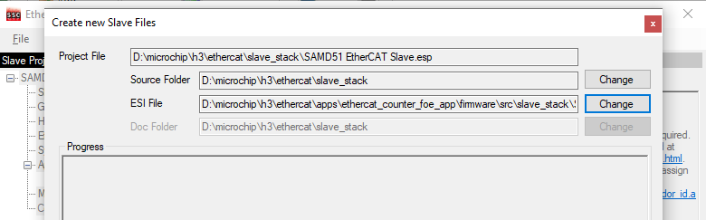
12. Click the Start button to create a new project file, Src folder, and ESI file (Slave Information file) in the desired directory path.
13. A pop-up window will indicate that the files have been successfully created. Click OK to continue.
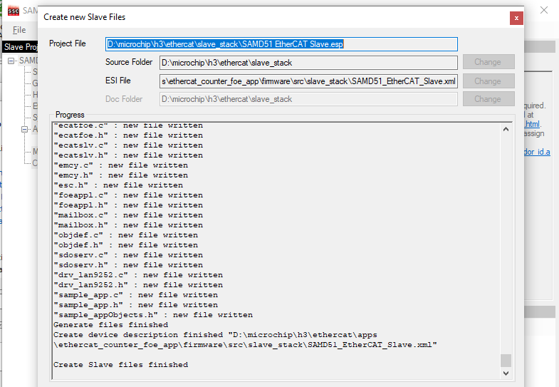
14. Along with generated new slave files, ESI file (.xml file) also will be generated. This ESI file will have information about new Vendor ID and object configuration. This ESI file is used to be programmed using "EEPROM Programming".
15. Application files would be named as sample_app. Because in this demo, input object file is given as sample_app.xlsx.

16. Browse to the directory where the new files were created, as shown in the example:
Src (Folder): This folder contains the Beckhoff Slave Stack code.
SAMD51_EtherCAT_Slave (ESP): This is the SSC Tool project file.
SAMD51_EtherCAT_Slave (XML): This is the EtherCAT® slave information file that must be used as an input to the EtherCAT master tool to configure EtherCAT® slave controllers.
Note: sample_app.c file is modified as per the present <ethercat_counter_foe_app> demo. Counter and Trigger value configuration and FoE Read/Write API are included to the sample_app.c file.
1. The default generated sample_app.c , does not have the counter and trigger configuration details. So, the user can add the modifying code for the counter and trigger.
2. Generated application files will not have the code for modifying the Output Counter. Modifying the Output Counter based on the Input trigger value in the sample application provided, is required to run the demonstration application. This sample_app.c file also doesn't have the FoE read and write APIs .
3. For this <ethercat_counter_foe_app> demo application , trigger,counter and FoE configured sample application files are already part of the EtherCAT demo application. Sample application files are present with updated information in the path (<install-dir>\ethercat\app\<demo>\firmware\src\slave_stack).
- Scanning EtherCAT Slaves
To scan EtherCAT Slaves, perform these actions:
1. Connect Port zero of the device to the master using a RJ45 Ethernet cable, and then power up the board. The Link/Act LED should be ON at Port zero when the cable is present. If the Link/Act LED is not ON, it indicates there is an issue with the connection or cable.
2. If any devices are present, delete them by right-clicking the device and select Remove as shown in the following figure. If there are no devices in the solution explorer, then skip this step.
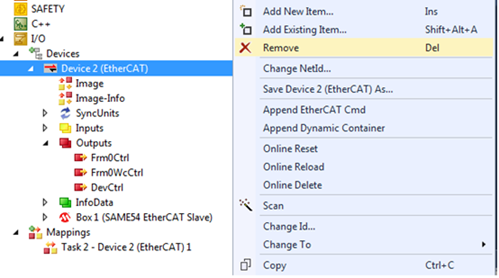
3. If master is in RUN mode, then it will not detect the slave as described in the steps five and six. Ensure that the master is in Config mode, by clicking.
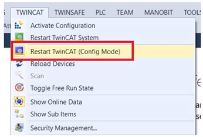
4. Scan for EtherCAT slave devices by right clicking Devices and then select Scan
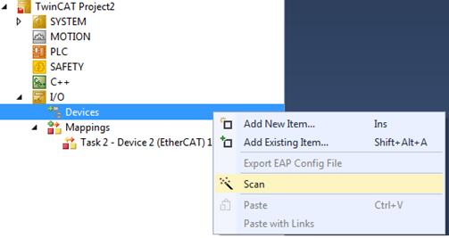
5. Click OK to continue scanning as shown in the below image.
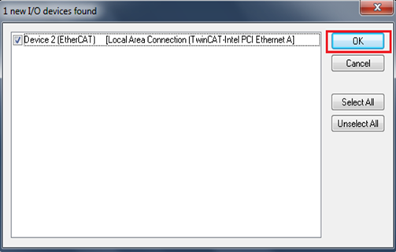
6. Click Yes to choose to scan for boxes

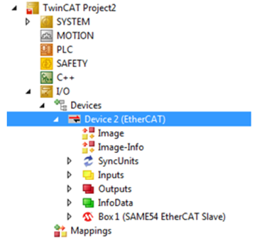
7. After a successful scan, there will be activity on Link/Act LED at Port zero.
- EEPROM Programming
To program the EEPROM, follow these steps:
1. After a successful scan, click on Device 2 (EtherCAT) in the solution explorer window of the TwinCAT tool
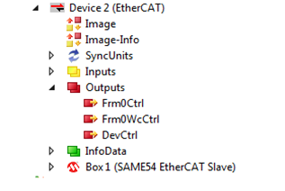
2. Click Online in the TwinCAT project window.
3. Right-click on the LAN9252 listings, and then select EEPROM Update from the contextual menu.
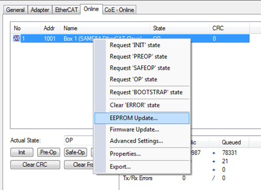
4. Upon selecting EEPROM Update, the Write EEPROM window will be displayed. Choose the corresponding EEPROM configuration, and then Click OK to initiate the EEPROM programming.
5. This shows an example of the LAN9252 SPI configuration selected for EEPROM programming in the TwinCAT.
FoE ( File over EtherCAT)test update :-
------------------------------------------
To use this feature from TwinCAT, EtherCAT Slave Information (ESI) file need to be updated to have the FoE feature enabled.
Sample “SAMD51_EtherCAT_Slave.xml” file is part of the "<install-dir>\ethercat\app\<demo>\firmware\src\slave_stack" folder and the attached project is based on only for the FoE configuration.
<Mailbox DataLinkLayer="true">
<FoE />
</Mailbox>
1. Click on Box1, Select "Online" tab.
2. Click "Bootstrap" (Label 1 on picture) button. (This will take the Slave to BOOT state).
3. Once the state has changed to 'BOOT', Click 'Download' button (Label 2 on picture).
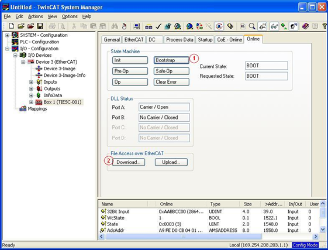
4. Locate the new firmware to be dowloaded click 'Open'. Select the file that need to be downloaded from the path “<install-dir>\ethercat\app\<demo>\firmware\src\FoE_Hex_imagefiles”.
FoE demonstrates the bank switching . Slave application initiates bank switch application(APP_BankSwitch()) and software reset(run_application()). Then Bank A moves to BANK B location and the new application stored in BANK B , moved to BANK A with flash location 0x0. The new application starts running from flash location 0x0 and will be ready with new application.
FoE demonstration in summery
------------------------------------
In Summary –
Step 1 – State change from INIT to BOOT from Masters.
Step 2 – Download file with password 0x11223344.
Step 3 – After file down completes, initiate state change from BOOT to INIT
Then new application (downloaded BIN file) will be executed from location 0x00.
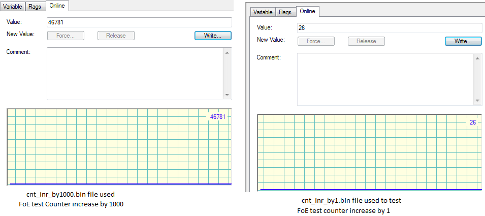
Trigger and Counter Demonstration
---------------------------
This section describes the demonstration of the EVB-LAN9252-PICtail in SPI mode.
1. Follow the steps as provided in EtherCat Master and Slave Configuration. There is one input and one output. The object variable can be seen in the solution explorer of the TwinCAT tool
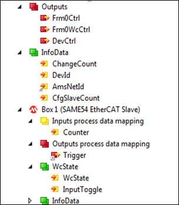
As part of this demo, two object variables are available and it is described in
|
Counter |
Trigger |
|
Value of Counter is determined based on Trigger value. If Trigger value is 0, then Counter is cleared |
Trigger value is used to determine value of Counter |
2. To change the Trigger value, click on the Trigger which is available under ‘Output process data mapping’ in the Search Solution Explorer window.
The TwinCAT project window will be displayed.
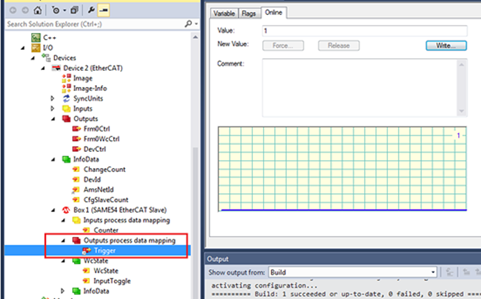
3. Change Trigger value to 5 or 0 as shown below. (Trigger value can be anything. Trigger value used here is only for example.)
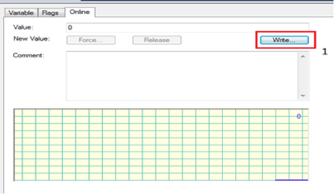
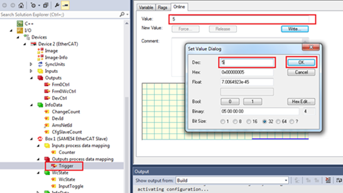
4. The Counter value will be incremented based on the Trigger value. (The Counter value will not be a stable value, and will keep the increment based on the Trigger value. The following figure is shown as an example).
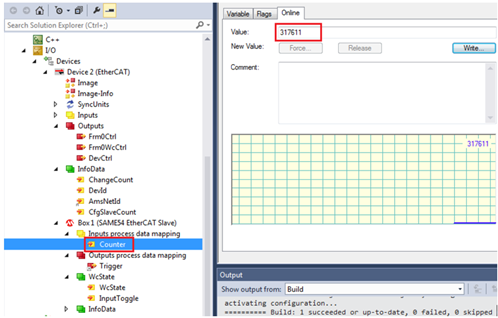
|
EtherCAT Library Help
|